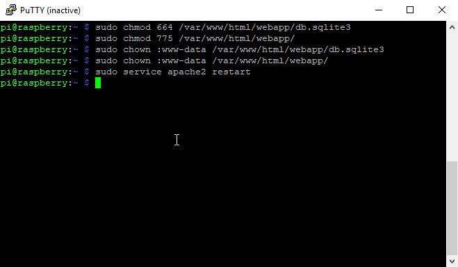
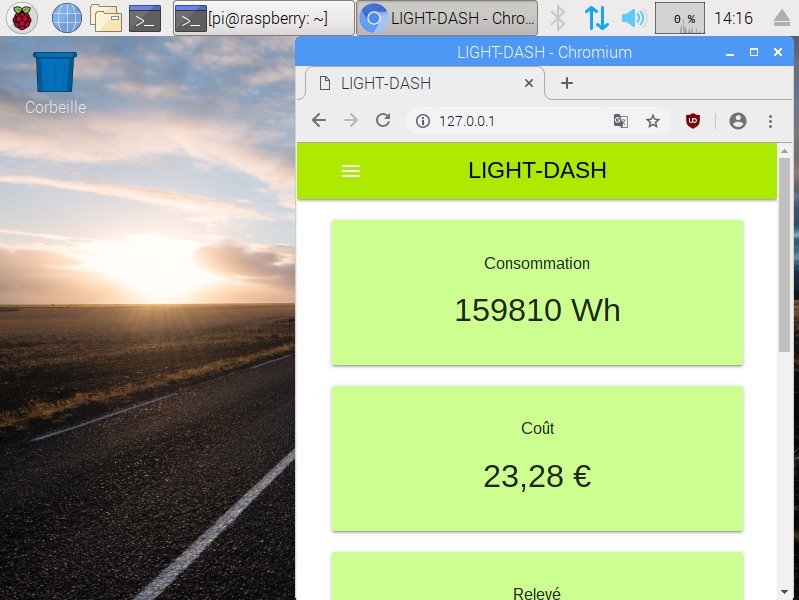
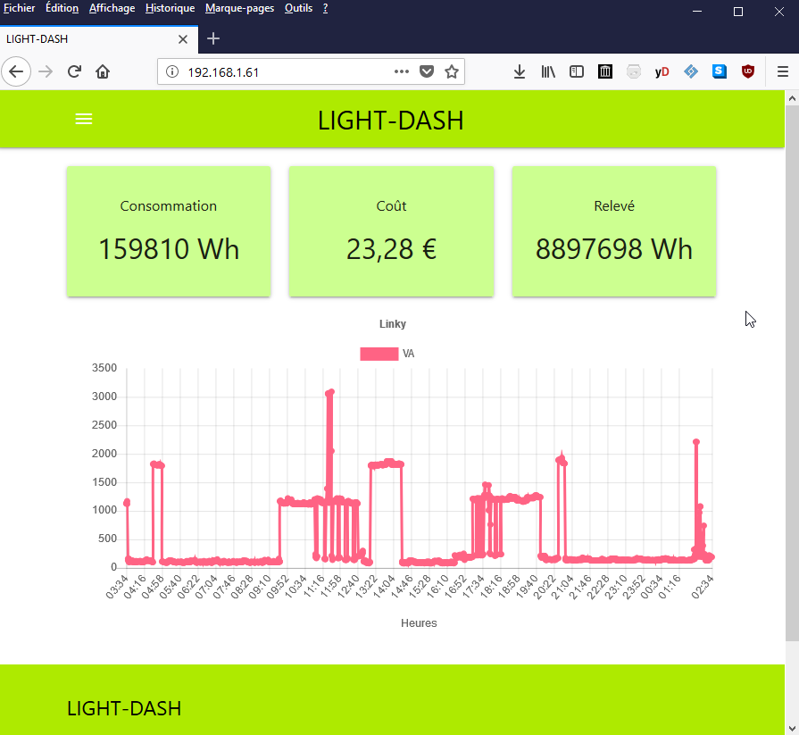
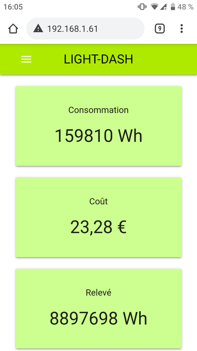

Mise en production de LIGHT-DASH sur un Raspberry Pi
Installation des dépendances
Nous utiliserons dans notre cas le système d'exploitation officiel du Raspberry Pi, Raspbian d'avril 2019 basé sur Debian 9 Stretch.
Assurez-vous que votre Raspberry Pi soit connecté à internet et sur votre réseau local. Nous vous recommandons d'utiliser le SSH pour faire cette procédure d'installation.
Mettez à jour votre système avec les commandes suivantes :
sudo apt-get update
sudo apt-get upgrade
sudo apt-get dist-upgrade
Installez les dépendances logicielles :
sudo apt-get install -y python3-pip apache2 git libapache2-mod-wsgi-py3
Mettez à jour l’utilitaire pip et setuptools :
sudo pip3 install --upgrade pip
sudo pip3 install --upgrade setuptools
Installez les librairies python pour LIGHT-DASH :
sudo pip3 install django==2.1.5
sudo pip3 install pillow==5.1.0
sudo pip3 install pyserial==3.2.1
sudo pip3 install serial==0.0.97
sudo pip3 install apscheduler==3.6.0
Récupération du projet LIGHT-DASH
On va copier la version de DEV du projet dans le répertoire home de "pi":
git clone –branch DEV https://github.com/Jikhai/LIGHT-DASH.git
Recueillez les fichiers statiques dans Django :
python3 LIGHT-DASH/webapp/manage.py collectstatic
Désactivez le mode DEBUG et autoriser toutes adresses IP :
nano LIGHT-DASH/webapp/webapp/settings.py
Remplacez les lignes suivantes:
DEBUG = False
ALLOWED_HOSTS = ['*']
Installation de LIGHT-DASH dans Apache2
Copiez le répertoire webapp dans /var/www/html/webapp/ :
sudo cp -R /home/pi/LIGHT-DASH/webapp/ /var/www/html/webapp/
Déplacez le fichier de configuration par défaut d'apache2 :
sudo mv /etc/apache2/sites-available/000-default.conf /tmp/000-default.conf
Editez un nouveau fichier de configuration pour apache2 :
sudo nano /etc/apache2/sites-available/000-default.conf
Copiez-collez la configuration suivante :
WSGIPythonPath /var/www/html/webapp/
Alias /static /var/www/html/webapp/static
<VirtualHost *:80>
ServerAdmin webmaster@localhost
DocumentRoot /var/www/html
ErrorLog ${APACHE_LOG_DIR}/error.log
CustomLog ${APACHE_LOG_DIR}/access.log combined
WSGIScriptAlias / /var/www/html/webapp/webapp/wsgi.py
<Directory /var/www/html/webapp/webapp>
<Files wsgi.py>
Require all granted
</Files>
</Directory>
</VirtualHost>
# vim: syntax=apache ts=4 sw=4 sts=4 sr noet
Changez permissions d'accès dans les répertoires de LIGHT-DASH :
sudo chmod 664 /var/www/html/webapp/db.sqlite3
sudo chmod 775 /var/www/html/webapp/
sudo chown :www-data /var/www/html/webapp/db.sqlite3
sudo chown :www-data /var/www/html/webapp/
Redémarrez le serveur Apache2 :
sudo service apache2 restart
Mise en production est terminé !!!
Maintenant LIGHT-DASH est accessible en local sur le Raspberry Pi via l’url suivante http://127.0.0.1/ :
LIGHT-DASH est disponible sur tous les ordinateurs/smartphones connecté sur le réseau local.
Sur un ordinateur :
Sur un smartphone :
